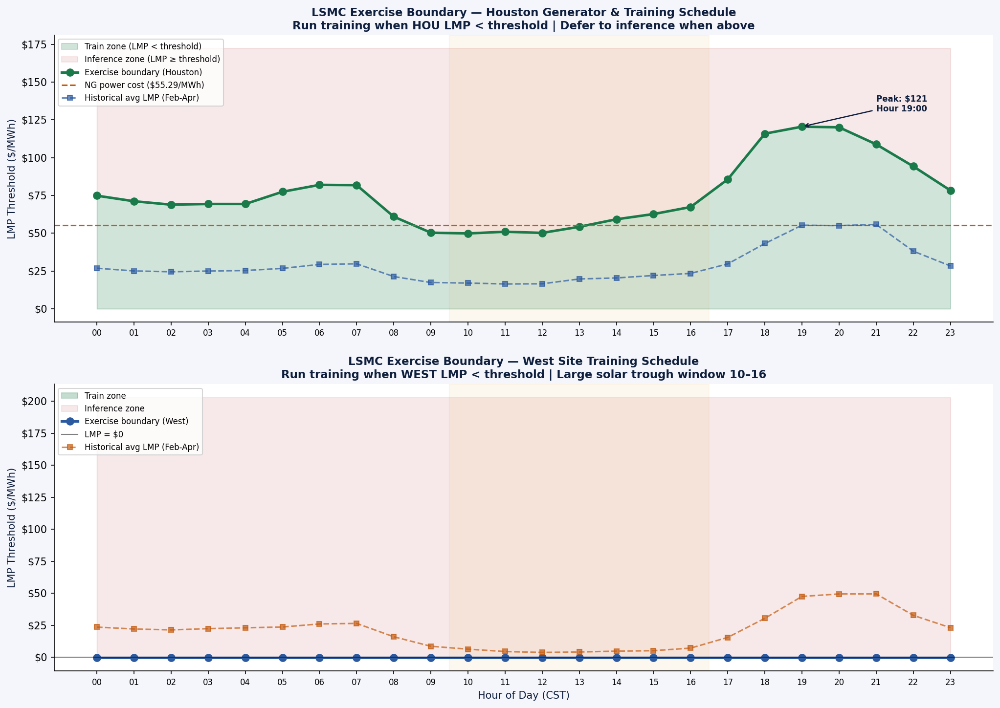
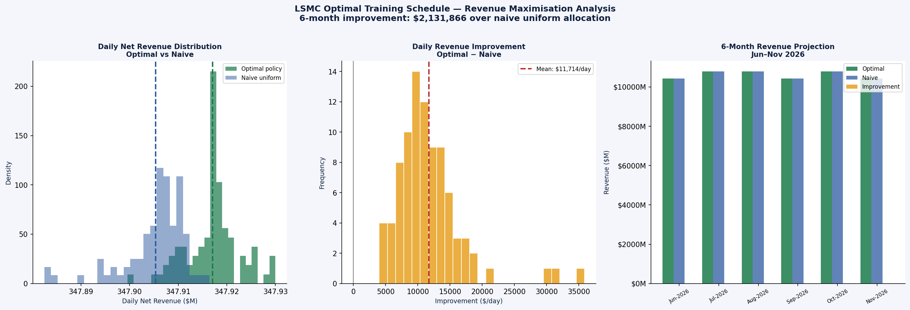

Least Squares Monte Carlo: Optimal Training Schedule
How we applied Longstaff-Schwartz backward induction to find the optimal hourly decision policy for AI training workload scheduling, turning the power price signal into a +$2.13M gain over a naive 24/7 baseline.
Least Squares Monte Carlo (LSMC)
LSMC (Longstaff & Schwartz, 2001) is an algorithm originally developed for valuing American options (financial instruments that can be exercised at any time before expiry). The core insight is that the optimal exercise decision at each time step requires knowing the expected future value of waiting, which cannot be observed but can be estimated from simulated price paths via ordinary least squares regression.
In our context, "exercising" means running AI training at a given hour, consuming power at the current LMP. The alternative is "waiting": deferring training to a future hour that may have cheaper (or negative) LMP. The LSMC algorithm finds the exact LMP threshold below which it is worth training now vs waiting.
exercise_value(x, t) = −LMP(t) × MWh_training (negative cost = positive when LMP < 0)
E_t[V(x, t+1) | x] ≈ β₀ + β₁·LMP + β₂·LMP² (OLS on basis functions)
Backward induction: start at T = 183, work backwards to t = 0
Training as an American option
The AI operator must complete a minimum of 500 MWh of GPU training per day per site (model update cycles). This training can happen at any hour within the day, which creates a scheduling option. The option has the structure of:
The training flexibility option
Each day, the operator holds 500 MWh of flexible demand that can be scheduled in any combination of hours. This is an American-style option: exercise (train) when the current LMP is below the optimal threshold, or wait for a cheaper hour.
Unlike a financial option, there is a deadline: training must complete within the 24-hour window. LSMC handles this constraint via backward induction from T=24.
Why not just train at cheapest hour?
A greedy policy (always wait for the daily minimum) requires perfect foresight about what the daily minimum will be. Ex ante, the operator does not know whether 10:00 is the cheapest or whether 14:00 will be cheaper. LSMC builds an optimal forward-looking policy from simulated futures, accounting for this uncertainty.
The algorithm: five steps
Exercise boundaries and gains
Hourly exercise boundaries (selected hours)
The West boundary is completely flat at −$0.42/MWh across all 24 hours. This means: train at West whenever LMP ≥ −$0.42, which is essentially always except during the most severely negative-price hours (deep curtailment events). The West optimal policy is almost always to run training because the LMP is so often near zero or negative.
Houston shows a strongly time-varying boundary, reflecting the peak-hour generator economics. The $121/MWh threshold at 19:00–21:00 reflects that at those hours, the generator produces at a margin well above gas cost; it is far more valuable to run the generator than to use cheap power for training.

Optimal exercise boundary θ*(h) by hour of day for both sites. West is flat at −$0.42/MWh across all 24 hours, meaning training runs at any hour where LMP exceeds this near-zero floor. Houston shows a sharply time-varying boundary that peaks at $121/MWh during 19:00–21:00, when dispatching the gas generator produces far more value than consuming cheap power for training.

Daily scheduling gain under the LSMC optimal policy vs uniform 24/7 training. Every month shows a positive gain with no reversal, averaging $11,714/day. West contributes through scheduled training during negative-price windows; Houston contributes through evening peak avoidance. The gain requires only a software change to the job scheduler with no hardware investment.
What LSMC scheduling means for the operator
$2.13M with zero hardware investment. The LSMC gain is a pure software change: update the training job scheduler to follow the hourly LMP threshold rule. No physical upgrades, no capital expenditure, no permit applications. This is the highest-ROI recommendation in the entire analysis.
West site runs at negative cost. Average daily power cost at West under the optimal policy = −$372/day. The grid pays the operator to run AI training during solar curtailment. This is not a rounding error; it is a structural feature of West Texas renewable over-penetration.
Houston evening peak is the critical window. The $121/MWh threshold at 19:00–21:00 means the operator should never train at Houston during those hours. Instead: dispatch the gas generator (if IMHR > 9,500), collect the LMP, and defer training to overnight. These three hours are where the Houston site captures most of its generator strip value.
Annualised: ~$4.3M/year. The $2.13M gain over 6 months scales to approximately $4.3M annually, assuming similar seasonal renewable patterns. ERCOT renewable penetration grows, so this number likely improves over the next 3–5 years as negative price frequency grows.
LSMC was developed for American options in quantitative finance. Its application here to AI training scheduling is a direct translation: the operator holds a series of American-style real options on cheap power, and LSMC identifies exactly when to exercise each one. The same algorithm applies directly if either site adds GPU capacity.